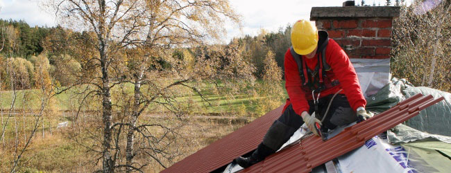

Timpul de instalare a acoperişului depinde de starea substructurii acoperişului, de dimensiunea şi forma acoperişului, de numărul de coşuri de fum, al ferestrelor de pe acoperiş şi al accesoriilor. în mod normal, instalarea unui acoperiş din tablă de oţel durează între 3 zile şi o săptămână.
Instalarea unui acoperiş include de obiceii:
- Demolarea/îndepărtarea acoperişului vechi (în cazul lucrărilor de renovare)
- Repararea substructurii şi/sau instalarea de noi elemente de substructură (în cazul lucrărilor de renovare)
- Instalarea profilelor de acoperiş, a elementelor de racord, a elementelor de etanşare şi de ventilaţie, cum ar fi coşurile de fum şi ferestrele de pe acoperiş
- Instalarea sistemelor de jgheaburi şi burlane şi a produselor de siguranţă pentru acoperiş, cum ar fi scările, sistemele parazăpadă şi podeţurile
- Curăţarea finală
Achiziţionarea unui sistem de acoperiş Ruukki este cea mai simplă, rapidă şi sigură cale de a avea un acoperiş nou. Sistemul include tot ceea ce este necesar pentru proiectul dumneavoastră de acoperiş, de la estimările costurilor şi a timpului necesar până la materiale, livrare şi instalare.
Citiţi mai multe despre sistemele noastre de acoperiş
Citiţi mai multe despre înlocuirea unui acoperiş existent cu un acoperiş din tablă de oţel
Pentru mai multe informaţii, contactaţi distribuitorul dumneavoastră local
Respectaţi normele locale de siguranţă
Fie că instalaţi singur acoperişul, fie că aţi contractat serviciile unei companii specializate, asigurarea unor condiţii de siguranţă la locul de construcţie este extrem de importantă pentru toate lucrările de instalare a acoperişului. Siguranţa la locul de construcţie este o parte esenţială a unei instalări reuşite.
Vă interesează să efectuaţi chiar dumneavoastră instalarea?
De asemenea, puteţi instala chiar dumneavoastră profilele de acoperiş, sistemele de jgheaburi şi burlane şi produsele de siguranţă pentru acoperiş
Descărcaţi instrucţiunile de instalare pentru profilele de acoperiş, sistemele de jgheaburi şi burlane şi produsele de siguranţă pentru acoperiş de la Ruukki